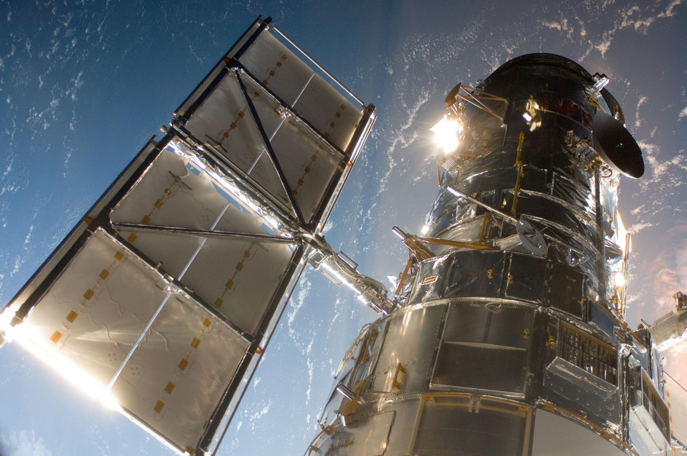

Optical astronomy is the branch of astronomy that observes celestial objects in or near the visible-light portion of the electromagnetic spectrum, roughly 380–750 nanometres, using telescopes and associated instruments such as spectrographs, photometers, and cameras. This spectral window is the one in which Earth's atmosphere is largely transparent and the one that human eyes evolved to detect, making optical astronomy both the oldest and historically most accessible form of astronomical observation.

NASA/ESA
For most of human history, the naked eye was the sole detector of light from the sky. This changed in 1608 when Hans Lipperhey filed the first patent for a refracting telescope; Galileo built and improved the design the following year, turning it skyward to discover Jupiter's four largest moons, the phases of Venus, and the resolution of the Milky Way into individual stars. In 1668, Isaac Newton built the first practical reflecting telescope, avoiding the chromatic aberration intrinsic to lenses. Reflecting telescopes — which impose no fundamental aperture limit, unlike refractors, which are impractical beyond about 1 metre — have dominated research ever since.
A persistent challenge for ground-based optical astronomy is atmospheric seeing: image blurring caused by turbulent air cells of varying refractive index. Typical seeing at a good mountaintop site is around 1 arcsecond; exceptional sites such as Mauna Kea (4,205 m) or Cerro Paranal (2,635 m) can achieve less than 0.4 arcseconds. Adaptive optics systems, which use deformable mirrors driven by wavefront sensors to correct for atmospheric distortion in real time, have greatly reduced this limitation for ground-based facilities. Placing a telescope in orbit removes it entirely: the Hubble Space Telescope, launched in 1990 with a 2.4-metre primary mirror, produces diffraction-limited images roughly 25 times more sensitive than the faintest objects visible from the ground and has been central to measurements of the Hubble constant and the deep-field imaging of early galaxies.
The three core techniques of optical astronomy are imaging, photometry, and spectroscopy. Imaging captures two-dimensional pictures of objects; modern sky surveys such as the Sloan Digital Sky Survey (SDSS) have mapped more than 25% of the sky using arrays of charge-coupled devices (CCDs). Photometry measures brightness in standardised filter bands — systems such as Johnson UBV or SDSS ugriz — and yields stellar colours, distances via standard candles, and light curves of variable and transient sources. Spectroscopy disperses starlight with diffraction gratings or prisms to reveal absorption and emission lines that act as 'fingerprints' of chemical composition, surface temperature, radial velocity via the Doppler effect, and cosmological redshift. Helium, for example, was identified in the Sun's spectrum by Norman Lockyer and Jules Janssen in 1868 — 27 years before it was found on Earth — and more than 20,000 solar absorption lines have since been catalogued.
Detectors have improved enormously over the past two centuries. Photographic plates, introduced in the mid-nineteenth century, captured only around 2% of incident photons; CCDs, first applied to astronomy in the 1970s and 1980s, achieve a quantum efficiency of around 70%. Modern research telescopes use segmented-mirror reflectors: the Gran Telescopio Canarias (10.4 m), the twin Keck telescopes (10 m each), and ESO's four Very Large Telescope unit telescopes (8.2 m each) represent the current generation. The next generation — ESO's Extremely Large Telescope (39.5 m, first light expected around 2029) and the Giant Magellan Telescope (24.5 m) — will enable direct imaging of exoplanet atmospheres and the study of the earliest galaxies.
See also: radio astronomy, infrared astronomy, ultraviolet astronomy, telescope, spectroscopy, electromagnetic spectrum.